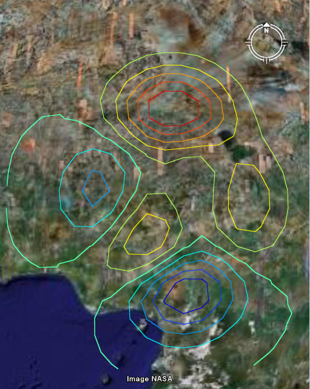

Visualizing contour maps in Google Earth.
Visualizing contour maps in Google Earth.

| kmlStr = ge_contour(X,Y,M) |
| kmlStr = ge_contour(X,Y,M,Parameter,Value) |
| kmlStr = ge_contour(X,Y,M) |
Visualizing contour maps in Google Earth. "X" contains the location longitudes whereas "Y" contains the location latitudes of the data in the 2D numerical array "M". "M" should at least be 2x2. Both "X" and "Y" must be monotonically increasing. "X" must be a vector of length size(M,2); "Y" must be a vector of length size(M,1).
| kmlStr = ge_contour(X,Y,M,Parameter,Value) |
In addition to the above, a number of options can be set regarding the appearance of the contourmap. Assigning values to the parameters can be accomplished by inclusion of an alternating sequence of parameters and their value. The table below provides an overview of the authorized options. The order in which the parameters are included does not matter. Please be aware that the options are case-sensitive. Examples are provided further down.
| Parameter | Description |
| 'altitude' | Height difference relative to the plane of reference (see parameter 'altitudeMode'). |
| 'altitudeMode' | Specifies which plane of reference to use. Must be one of 'absolute', 'relativeToGround' or 'clampToGround'. |
| 'cLimHigh' | Specifies the value to which the maximum of the colorbar should apply. Default is max(M(:)). |
| 'cLimLow' | Specifies the value to which the minimum of the colorbar should apply. Default is min(M(:)). |
| 'cMap' | Specifies the colormap to use for visualizing the grid cell colors. Default is 'jet', but any MATLAB colormap can be used. |
| 'description' | A description of objects can be included using this parameter. Its value must be passed as a character array. It will be displayed in the Google Earth Viewer within a pop-up text balloon. |
| 'extrude' | See Extruding objects. |
| 'forceAsLine' | When lines do not end at the location where they started, they are sometimes automatically connected by the OpenGL renderer when displayed in the Google Earth Viewer. By setting this parameter to true, this is avoided by plotting lines from start to end and back. This will force all lines to end at their starting point. Note that this will increase file size. Default is true. |
| 'lineAlpha' | When no line color is specified, the function assigns colors to each contour line individually. The 'lineAlpha' parameter can be used to set its transparency. |
| 'lineColor' | Line color specification, including transparency. Color value format must be passed as a character array according to the format string 'TTRRGGBB', with 'TT' representing transparency; 'RR', 'GG', and 'BB' representing red, green, and blue colors, respectively. Intensity values are denoted as two-digit hexadecimal numbers ranging from 00 to FF. For example, '80FF0000' is semi-transparent red and 'FF0000FF' is fully opaque blue. |
| 'lineWidth' | Width of the contour lines. |
| 'lineValues' | Nx1 vector whose length will be the number of contour line levels, and whose values are the level values. (Not to be used in conjuction with parameter 'numLevels') |
| 'msgToScreen' | Defines whether verbose feedback is provided by the function when it is accessed and when it finishes. Default is false (which is equivalent to logical(0), but quicker). |
| 'name' | This character array will be used within the Google Earth Viewer 'Places' pane to identify objects. |
| 'numLevels' | Number of contour levels to use. Default is auto generated. |
| 'snippet' | A short description of the feature. In Google Earth, this description is displayed in the Places panel under the name of the feature. If a Snippet is not supplied, the first two lines of the description are used |
| 'tessellate' | See Tessellation. |
| 'timeSpanStart' | See Dynamic visualization. |
| 'timeSpanStop' | See Dynamic visualization. |
| 'visibility' | Whether the object is initially visible. Must be passed to ge_contour() as a numerical value 1 or 0. Visibility state can be changed within the Google Earth Viewer by clicking the object's checkmark in the 'Places' pane. |
Latitudes on the Southern hemisphere must be passed as negative values. Same for longitudes on the Western hemisphere.
Latitudes and longitudes should be passed in units of decimal degrees (also known as fractional degrees). Google Earth uses Simple Cylindrical projection (also known as Plate Carée) with a WGS84 datum.
demo_ge_contour provides an example of the use of ge_contour(). It will generate a *.kml file that looks like the image below when opened in the Google Earth viewer.
